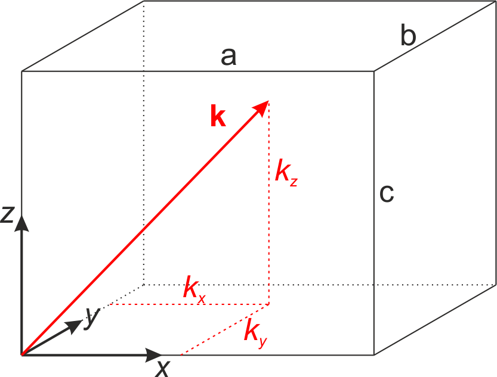
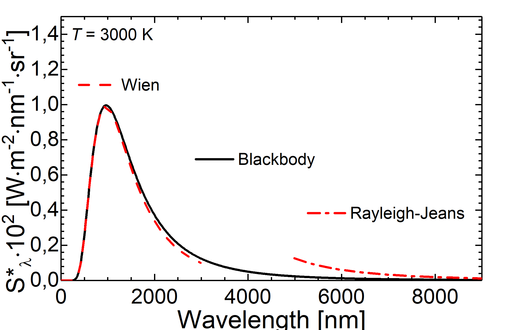

This page was generated from `/home/lectures/exp3/source/notebooks/L20_AMA/Quantum_mechanics_introduction.ipynb`_.

The Birth of Quantum Mechanics¶
What we have seen during the last lecture¶
In 1888 Wilhelm Hallwachs published the result that metal plates irradiated with UV light become positively charged. He explained this results through teh emission of electrons which was the foundation of the explanation of the photoelectric effect. Later in 1902 Lennard measured the photocurrent between two plates in vacuum. The current did set in already at a negative voltage \(U_0\) between the plates und reached a plateau which depended only on the light’s intensity. He concluded the kinetic energy of the electrons is \(E_{\mathrm{kin}} \le e \cdot U_0\) and further
The kinetic energy of the photoelectrons depends on the frequency of the light \(\nu\), not on its intensity.
The number of photoelectrons is proportional to the light’s intensity.
There is no delay between light irradiation and electron emission.
In 1905, then, Einstein explained these findings on the basis of the quantum model of light. In accord to this model every absorbed quantum of energy transfers its energy \(h \cdot \nu\) completely to one electron. The maximum kinetic energy of an electron is then governed by \(E_{\mathrm{kin}}^{\mathrm{max}} = h \cdot \nu - W_{\mathrm{a}}\), with \(W_{\mathrm{a}} = -e \left( \phi_{\mathrm{vac}} - \phi \right)\) being the work function of one electron. The work function can be determined by means of the voltage \(U_0\) at which the photocurrent sets in \(E_{\mathrm{kin}}^{\mathrm{max}} = -e\cdot U_0\) with \(U_0 < 0\).

Fig.: (left) Scheme of the apparatus used by Hallwachs. (center) Scheme of the apparatus used by Lennard and the corresponding photocurrent :math:`I_{mathrm{ph}}`. (right) From the onset voltage :math:`U_0` one can calculate the work function :math:`W_{mathrm{a}}` as intercept and Planck’s constant :math:`h` as part of the slope.
Blackbody radiation and cavity radiation¶
A blackbody radiator is a model of a radiation source whos emission depends only on its temperature. Its emission, however, does neither depend on the material the radiator is made from, nor on its surface or any other potential characteristics. As a consequence the absoption of an ideal blackbody is \(A = 1\). A realization of an blackbody radiator might be constructed on the basis of a cavity within a solid body. If one drilles hole in the cavity wall with the prerequiste that the area of this hole \(\Delta A\) is small compared to the overall area of the cavity \(A_{\mathrm{cav}} \gg \Delta A\), the radiation entering the cavity is reflected and absorbed multiple times before the radiation might reach the oppening agin. Practically the whole radiation is absorbed \(A \approx 1\).
Fig.: Principle of a cavity resonator. Due to the geometry (the inner surface :math:`A_{mathrm{cav}}` is much bigger than the area of the inlet :math:`Delta A`) radiation is reflected and partially absorbed multiple times and cannot excape.
If one heats the cavity with the cavity wall being kept at a uniform temperature, all atoms at the wall oscillate due to their thermal energy and emit electromagnetic waves as thermal radiation. Since \(\Delta A \ll A_{\mathrm{cav}}\) and \(A = 1\), the emission of a blackbody radiator is greater than the emission of any other thermal radiator.
We can show for cavity radiation:
If the cavity walls are in a stationary state, the absorption and emission of the walls are in equilibrium. For every frequency \(\nu\) the absorption and emisssion of an area element is given through
\[\frac{\mathrm{d} W_{\mathrm{A}} \left( \nu \right) }{\mathrm{d} t} = \frac{\mathrm{d} W_{\mathrm{E}} \left( \nu \right) }{\mathrm{d}t}\]Cavity radiation is isotropic. The spectral radiance at any point of the cavity does not depend on the direction of observation and is independet of the kind and shape of the walls. (If this point had not been hold true, one might have placed a black plate into the cavity and oriented it with its normal facing the stronges radiation. Thus, one side of the plate would have became hotter than the other one, which is against the second law of thermodynamics.)
Cavity radiation is homogenous. The energy spectral density is independent from the particular position within the cavity. (If this had not been hold true, you might have constructed a perpetuum mobile)
If we now place a body in the cavity the area element \(\mathrm{d}A\) experiences a spectral radiancy of \(S^{\ast}_{\nu} \; \mathrm{d} \nu \; \mathrm{d} A \; \mathrm{d} \Omega\) on the interval \(\left[ \nu; \nu + \mathrm{d} \nu \right]\) from the solid angle \(\mathrm{d} \Omega\). The area \(\mathrm{d} A\) then absorbs the radiant power of
and emits the radiancy of
with \(A_{\nu}\) and \(E^{\ast}_{\nu}\) being the absorption and emission capabilities, respectively.
If the body is in thermal equilibrium the absorption and emitted power have to be equal. Furthermore, because the spectral radiancy within the cavity is isotropic, its value is constant for every orientation (\(\theta\) and \(\varphi\)). Thus, we immediately obtain Kirchhoff’s law of thermal radiation
Thus, for every body being in thermal equilibrium with the cavity radiation the ratio between the emission capability and absorption capability at a given frequency \(\nu\) is equal to the spectral radiancy \(S^{\ast}_{\nu} \left( T \right)\) of the cavity. Since the blackbody radiator absorbs perfectly \(A = 1\), it follows that the spectral emission capability \(E^{\ast}_{\nu}\) is identical to the spectral radiancy \(S^{\ast}_{\nu}\).
Spectral density of modes¶
Now we would like to have a look on how electromagnetic wave behave within a cavity. First we discuss a one-dimensional problem. If we assume an electromagnetic wave with an electric field of \(\vec{E} \left( z, t \right) = E_0 \cos \left( \omega t - k z \right) \; \vec{e_x}\) and being reflected at a conducting surface at \(z = 0\), we have to pay attention that tangtial components of \(\vec{E}\) cannot exist at the interface. Thus, it follows
and
The superposition of incident and reflected waves then result in
which is a standing wave.
If we now discuss the three-dimensional problem, we have a look at a cuboid with ideally conducting walls and the length of the edges being \(a\), \(b\), and \(c\). If we place one corner of the cuboid at the origin of the coordinate system and discuss the electric field for an arbitrary orientation \(\vec{E} = \left( E_x, E_y, E_z \right)^{\mathrm{T}}\), we obtain from the vanishing tangential components of the electric field at the interface the following boundary conditions

Fig.: A cuboid as resonator.
Due to reflections and superpostion of the components of the wavevector \(\left( \pm k_x, \pm k_y, \pm k_z \right)\), standing waves are generated if the boundary conditions are fulfilled
with \(m,n,o\) being natural numbers. Furthermore, the magnitude of the wavevector is given through \(\left| \vec{k} \right| = \sqrt{k_x^2 + k_y^2 + k_z^2}\) which directly leads to the condition for posisble frequencies
Consequently, only such standing wave are allowed in our resonator that obey the conditions
with \(\vec{E}_{0} \left( m,n,o \right) = \left( E_{0,x},E_{0,y},E_{0,z} \right)^{\mathrm{T}}\) and
Such a box with ideally conducting walls is called a cavity resonator and the possible standing wave the resonator’s principle oscillations or resonator modes.
In order to simplify the calculation a bit, we discuss the case of a cube instead of a cubiod. The frequency condition then result in
In a coordinate system in \(k\)-space where \(k_x\), \(k_y\), and \(k_z\) define the axes, the points \(\left( m, n, o \right)\) form a lattice with the lattice constant \(\pi / a\). As the combinations of the parameters \(\left( m, n, o \right)\) defines the number of modes within the resonator, as a consequence there are as much modes as lattice points in \(k\)-space. The very last equation, in addition, defines a sphere with the radius $:nbsphinx-math:left| \vec{k} \right| = \pi `/a :nbsphinx-math:cdot :nbsphinx-math:sqrt{n^2 + m^2 + o^2}` $

Fig.: Two-dimensional k-space with a circle representing a sphere in twodimensional space.
Now we can discuss the following case. For \(\sqrt{m^2 +n^2 +o^2} \gg 1\), it follows for the radius of the sphere \(\left| \vec{k} \right| \gg \pi / a\) and for the wavelength \(\lambda \ll 2a\). As a consequence the number of lattice points \(N_{\mathrm{L}}\) (under the boundary condition \(m,n,o > 0\)) can be approximated with the number of unit cells within our sphere with the radius \(\left| \vec{k} \right|\) in the first octant. The volume of the sphere in the first octant reads as
Then, we can calculate the number of lattice points on the basis the ratio of the volume of the sphere in the first octant to the volume of a unit cell (\(V_{\mathrm{UC}} = \left( \pi / a \right)^3\))
If we now consider that every standing wave might have an arbitrary polarization that can be constructed as superposition of two orthogonal directions of polarization, the number of modes doubles. Thus, the number of possible modes with a frequency \(\omega\) smaller than the limitting frequency \(\omega_{\mathrm{S}}\) within a cavity resonator is given through
Here we made use of \(\omega_{\mathrm{S}} = 2 \pi v_{\mathrm{S}}\). If we now go back to real space, we can calculate the number of modes per unit volume for \(\nu \le \nu_\mathrm{S}\) as the ratio of the number of modes up to the limiting frequency \(\nu_{\mathrm{S}}\) divided through the real-space volume \(V = a^3\). As a result we get the denisty of modes being
Often one is interested in the spectral density of modes, that is the number of allowed modes per unit volume of the resonator within the interval \(\left[ \nu ; \nu + \Delta \nu \right]\). A straight forward calculation of the first derivative of the density of modes with respect to the frequency \(\mathrm{d}n/\mathrm{d}\nu\) gives us an expression for the spectral mode density
So far we have calculated that only under particular coditions standing waves can be established within a cubik cavity. These eigen-oscillations are called “modes of the cavity”. Furthermore, if the wavelength is small compared to the cavity dimensions, we derived the spectral density of modes, that is the number of modes within one cubic meter of volume within the interval between \(\nu\) and \(\nu + \mathrm{d}\nu\) is
If we now assume \(\bar{W}_{\nu} \left( T \right)\) being the average energy per eigen-oscillation within the interval \(\mathrm{d}\nu\), we can calculate the spectral energy density \(\omega_{\nu}\mathrm{d} \nu\) as
Now the qestion arise how we can derive an expression for the spectral energy density \(\omega_{\nu}\mathrm{d} \nu\). We will discuss this expression in a moment, but before we have to have a look at historical results leading to the law of radiation as we know it nowadays.
Stefan-Boltzmann Law¶
In order to derive the expression which we know today as Stefan-Boltztmann law, Stefan discovered the empirical relation in 1879 and later in 1884 Boltzmann derived the law on the basis of thermodynamics and Maxwell relations. First we want to consider the inner energy \(U\) of an isolated system, which can expressed as thermodynamic potential depending on the temperature \(T\), the entropy \(S\), pressure \(p\)n and volume \(V\),
If we now calculate the derivative of the inner energy with respect to the volume at constant temperature
and make use of one Maxwell relation, namely
we get
Previously Maxwell presented an expression for the radiation pressure being \(p = \frac{1}{3}u\) with \(u\) as the energy density and the total inner energy as \(U = u\cdot V\). If we use this expressions in the equtation of the derivative and integrate, we obtain
with \(C_1\) and \(C_2\) denoting integration constants. In the modern form we refer to the radiation power \(P\) as
being proportional to the Stefan-Boltzmann constant \(\sigma\), the blackbody area \(A\), and to the fourth power of the absolute temperature. This law also describes that every body with a temperature higher than \(0 \mbox{ K}\) emits electromagnetic radiation.
Wien’s Displacement Law¶
In 1896 Wien published how the spectrum of cavity radiation changes with altered temperature. Today this law is often not refered to the overall shape of the spectrum, but rather to the maximum of the spectrum. In 1896 the Stefan-Boltztmann law was already published stating that the emitted radiance depends on the apparent temperatrure to the power of 4 (\(\propto T^4\)). However, the actual spectral distribuition of the energy was unknown.
On the basis of thermodynamic concepts and the Stefan-Boltzmann law Wien derived a relation between the wavelength \(\lambda\) and the spectral energy at a particular wavelength \(\varphi \left(\lambda\right)\)
and
The last equation can be reformulated into the shape of
with \(b\) being the proportionality or Wien’s displacement constant (\(b = 2.898 \cdot 10^{-3} \, \mathrm{m}\cdot\mathrm{K}\)).
Wien further examined the integration with the result for the energy profile \(\varphi = \varphi_0 \; \frac{\mathrm{d} \lambda_0}{\mathrm{d} \lambda} = \varphi_0 \; \frac{\mathrm{d} T}{\mathrm{d} T_0}\). In addition with the known relation from the Stefan-Boltzmann law \(\varphi \propto \frac{T^4}{T_0^4}\), Wien proposed the spectral shape at a particular temperature on the basis of the spectral shape at a know temperature \(\varphi = \varphi_0 \frac{T^5}{T_0^5}\). So far the exact spectral shape still remained unknown; however, by means of adjusting the parameter \(\varphi_0\) theory were successfully brought into coincidence with experimental results and the spectrum for small wavelengths could be predicted.
Wien’s distribution law or Wien approximation¶
In his original publication in 1896 Wien employed the wavelength dependence of the blackbody radiation and the Mawell-Boltzmann distribution for the speed of molecules. On the basis thermodynamic arguments he derive a formula for the radiance
with \(C_1\) and \(C_2\) being constants. As to be expected the curve described by this formula exhibts a maximum. In the case of short wavelength, experimental results from cavity radiation can be well described. For long wavelengths, instead, the Wien approximation underestimated the radiance.

Fig.: Comparison between blackbody radiation (solid lines) and Wien approximation (dashed lines) at different temperatures.
Rayleigh–Jeans law¶
In order to calculate the average energy per eigen-oscillation Rayleigh and Jeans used the classical appraoch. Similar to the hamonic oscillators every mode bears the average energy of
with \(k\) and \(T\) being the Boltzmann constant and absolute temperatur, respectively. Therefore, within the limit of the classical approach the spectral energy density,
rises quadratically with respect to the frequency \(\nu\). Tis quadratic relation is know as Rayleigh-Jeans law. As a consequence a small hole in the cavity wall will then emit radiation into the solid angle of \(\mathrm{d} \Omega = 1 \mbox{ sr}\) with the radiance of
If we no consider a temperatur of about \(5000 \; \mathrm{K}\) we achieve a wavelength bigger than \(2 \; \mu\mathrm{m}\), being well in the infrared region. For this spectral region the measured radiance and the theoratical prediction are in agreement. However, if we reduce the wavelength, disparities between experimental findings and the prediction appear. Moreover, if the Rayleigh-Jeans law was valid, there has been the so-called ultraviolet catastrophe! In the case of decreasing frequencies, the spectral energy density and the integrated radiance will rise until they become infinite big for vanashing frequencies.

Fig.: Comparison between blackbody radiation (solid lines) and radiation as decribed through the Rayleigh-Jeans law (dashed lines) at different temperatures.
Planck’s law¶
In 1900 Max Planck faced the question how to omit the ultraviolet catastrophe and to describe the blackbody radiation as a whole.

Fig.: Comparison between blackbody radiation at 3000 K (solid line) and radiation as decribed through the Wien approximation (dashed line) and the Rayleigh-Jeans law (dash-dotteded line).
He proposed a revolutionary hypothesis called Quantum Hypothesis or Planck’s Postulate. As Rayleigh and Jeans before, Planck assumed the modes within a cavity resonator as oscillations. However, in contrast to the classical approach allowing every oscillator to acquire every, arbitrary small value of energy (\(W_{\nu} = k \cdot T\)), Planck postulated that these oscillators are allowed to acquire energy only in particular quanta of energy. Those quanta do depend on the frequency \(\nu\) of the eigen-oscillation and are multiples of a smallest quantum of energy. Thus it follows
The letter \(h\) was initially chosen as help constant, but shortly after the success of Planck’s Postulate the constant was re-named as Planck’s Constat with the value
This event of postulating a smallest quantum of energy is often referred to as the birth of quantum mechanics. Nowadays we can define the smallest quantum of the electromagnetic field bearing the energy \(h \cdot \nu\) as Photon. The energy of an eigen-oscillation with \(n\) photons is then
If we now consider thermal equilibrium, the likelyhood \(p \left( W_{\nu} \right)\) of this particular eigen-oscillation bearing the energy of \(W_{\nu}\) (meaning that this particular eigenstate is occupied by \(n\) photons) is propotional to the Boltzmann factor \(\mathrm{e}^{-W_{\nu}/\left( k\cdot T \right)}\)
Since we did calculate a likelyhood, the relation \(\sum_{n=0}^{\infty} p \left(n \cdot h \cdot \nu \right) = 1\) holds true. Furthermore, we can calculate the average energy per eigen-oscillation as the energy of this particular oscillation weighted with the likelyhood that this particular eigenstate is occupied with this particular number of photons. the averagred energy per eigen-oscillation then reads as \(\bar{W}_{\nu} = \sum_{n=0}^{\infty} p\left( nh\nu \right) n \, h\, \nu\) and further
The spectral energy density of a cavity radiator then is given through
which leads us to the famous Planck’s formula
Here \(\omega \left( \nu,T \right) \mathrm{d}\nu\) represents the spectra distribution of the energy density per frequency intervall; its unit is \(\left[ \omega \left( \nu,T \right) \right] = \mbox{Jsm}^3\). The radiance of the area element \(\mathrm{d}A\) emitted into the solid angle \(\mathrm{d} \Omega\) then is
So far we have expressed Planck’s law in dependece of the frequency \(\nu\). With the aid of teh relation \(\lambda = c/\nu\) we can also express Planck’s law in dependence of the wavelength. Therfor, we have to pay attantion to \(\mathrm{d}\lambda = -\left( c / \nu^2 \right) \mathrm{d} \nu\). Then, we can describe the spectral energy density
and the radiance
as functions of \(\lambda\) and \(T\).

Fig.: Blackbody radiation as described through Planck’s law of radiation at different tempertures.
[ ]: